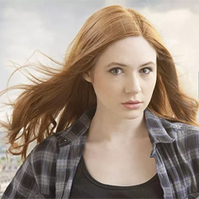

| Home | The Doctors | The Companions | The Villains |
|
|||
|
Amy Pond's HomepageAmy Pond, also known as Amelia Pond, is a fictional character portrayed by Karen Gillan in the long-running British science fiction television seriesDoctor Who. Amy is a companion of the series protagonist the Doctor, in his eleventh incarnation, played by Matt Smith. She appears in the programme from the fifth series (2010) to midway through the seventh series (2012). The Doctor first meets Amelia when she is seven years old (Caitlin Blackwood) and disturbed by a crack in her wall (that is actually one of several cracks in the universe). He promises to return to the lonely girl in five minutes and take her with him in his time and space machine the TARDIS, but accidentally arrives twelve years later, by which time Amy has become skeptical about her "imaginary friend". However, she eventually decides to travel with him, and the duo are later joined by her fiance Rory Williams (Arthur Darvill). Amy and Rory marry at the end of the fifth series and in the sixth series Amy gives birth to their daughter, Melody Pond, who is revealed to be recurring character River Song (Alex Kingston). |